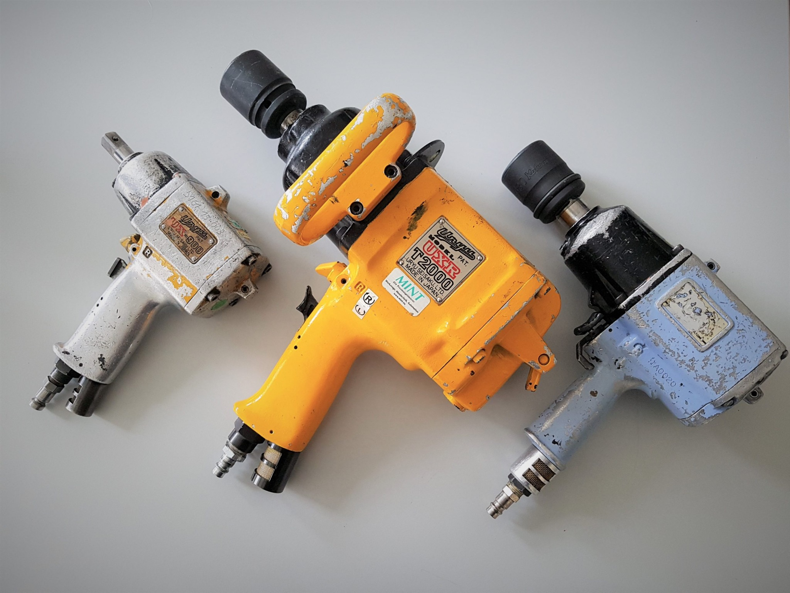
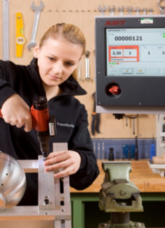
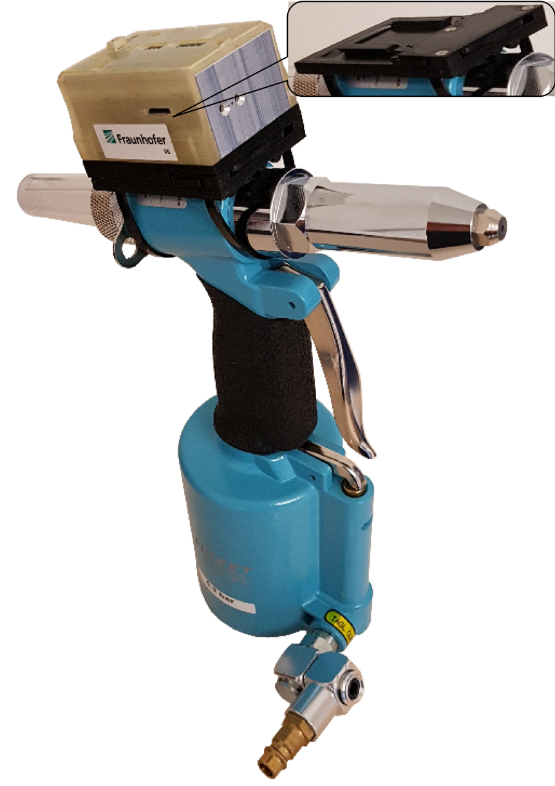
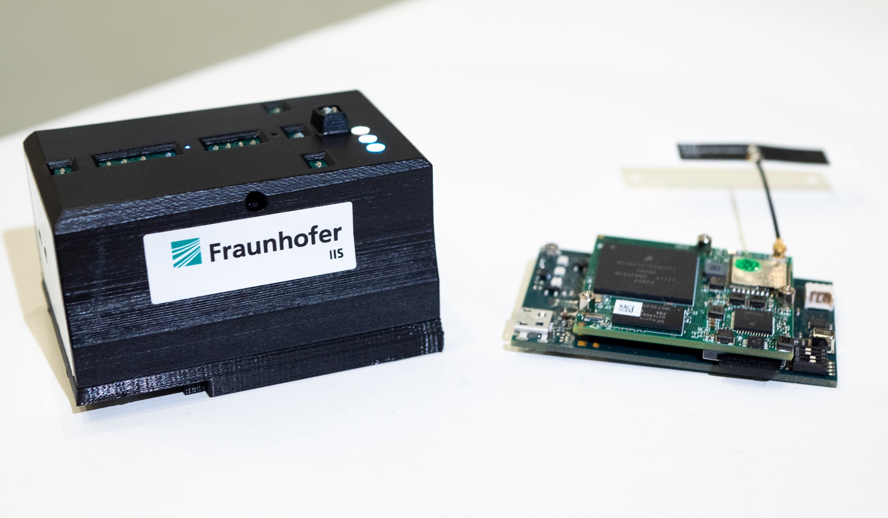
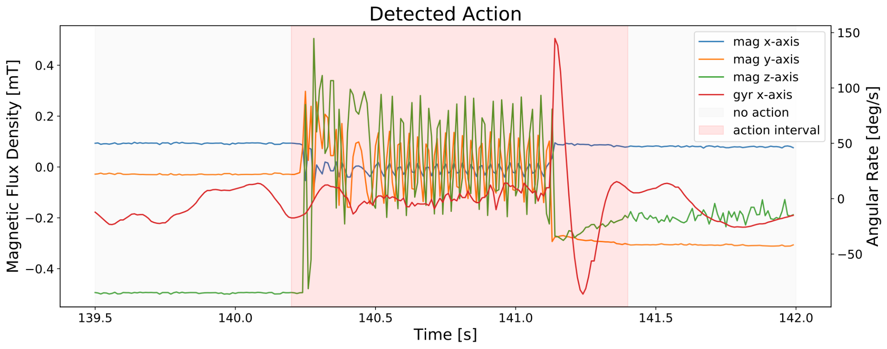

Tool Tracking Dataset

Multimodal sensor data from four hand-held industrial tools for activity recognition, process monitoring and automatic quality assurance of manual assembly work.
Overview
Manual work remains essential in industrial production because workers can adapt quickly to new tools, tasks and environments. Unlike automated production steps, however, manual assembly is difficult to monitor and document continuously. The Tool Tracking system addresses this challenge by attaching sensor modules to existing hand-held tools and using machine-learning methods to recognize performed operations. This can provide immediate feedback to workers and help close gaps in process quality assurance.
Background
Many high-volume or safety-critical production operations are fully automated because this makes reproducible quality control possible. For less critical tasks such as mounting covers or other components, flexible manual labor is often more economical than extensive automation. Operators can quickly learn new procedures and handle a broad variety of tools, but their actions may not always follow the intended sequence. Quality checks based on a second person, an additional acceptance test, or a camera system can be costly.
To combine the flexibility of manual work with the traceability of automated production, hand-held tools can be instrumented and their activities classified while the worker performs them. The approach must cope with different tools and configurations, changing working environments, and processes that are not known in advance.

System description
The Tool Tracking system uses a machine-learning-based approach to analyze manual operations with existing tools. It combines accelerometer and gyroscope measurements with a magnetic-field sensor and a microphone. An automated machine-learning pipeline supports data acquisition for new tasks, model training, and deployment of the resulting classifier on the target sensor module.
A sensor unit can be mounted on a tool using a detachable fixture. Optionally, optical or radio-based positioning can be added where a task requires spatial information. The sensor unit and the worker-facing user interface communicate wirelessly with a back-end server. The server hosts containerized services and a database, while a browser-based interface (for example, on a tablet) presents feedback to the worker.


Dataset description
Measurements were collected with four different tool types:
- Electric screwdriver
- Pneumatic screwdriver
- Pneumatic riveting gun
- Torque wrench
Each tool was recorded with a gyroscope, accelerometer, magnetic-field sensor and microphone, at sensor-dependent sampling rates. The tools differ considerably in the duration and characteristics of their action signals, the most informative sensor and the structure of individual events.
With an electric screwdriver, motor operation produces a magnetic-field response until the target torque is reached and the motor stops. A pneumatic screwdriver, by comparison, disengages its drive and continues spinning down. A pneumatic riveting gun performs short, abrupt actions with little preceding activity. A torque wrench produces a longer preparatory motion through its release mechanism, ending in a mechanical click.

Between 30 and 60 minutes of raw recordings were collected for each tool, generally including roughly 100–200 examples per action type. Besides operations such as tightening, untightening and riveting, the data also contains atypical events: shaking a tool, setting it down hard, changing its nose piece or manually rotating its motor.
Example statistics
Example recordings for an electric screwdriver have a total duration of 52.0 minutes. The following counts and durations describe the annotated action classes.
| Class | Count | Mean duration [s] | Total duration [s] |
|---|---|---|---|
| garbage | 25 | 0.11 | 2.66 |
| undefined | 924 | 2.15 | 1982.71 |
| tightening | 199 | 1.21 | 240.05 |
| untightening | 197 | 0.73 | 143.84 |
| motor_activity_cw | 147 | 1.68 | 246.7 |
| motor_activity_ccw | 145 | 1.75 | 253.85 |
| manual_motor_rotation | 190 | 0.51 | 97.7 |
| shaking | 61 | 1.18 | 72.06 |
Mean sensor sampling rates
| Sensor | Mean sampling rate [Hz] |
|---|---|
| Accelerometer and gyroscope | 102.292 |
| Magnetic-field sensor | 154.646 |
| Microphone | Not specified |
The reference table does not specify a mean sampling rate for the microphone.
System demonstration
The video Cognitive handheld tools demonstrates the monitored tool workflow and feedback for manual assembly operations.
Download and code
The dataset, accompanying descriptions and data loaders are provided through the project's GitHub repository. The data archives themselves are not stored on this GitHub Pages website.
- Tool Tracking dataset and codeGitHub repository with the dataset's accompanying material and loader codeOpen repository ↗
Frequently asked questions
No questions so far.